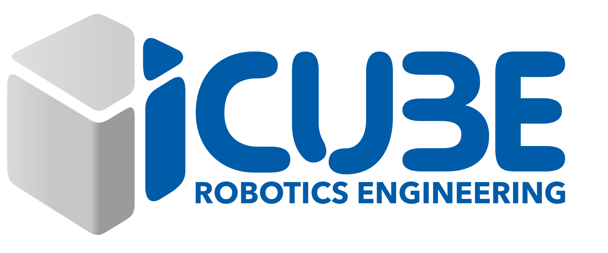
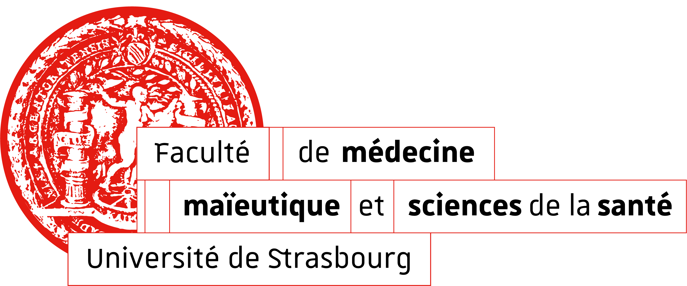

Robotization of a Trans-Oesophageal Echocardiography Probe
Research project focused on the development of a robotic assistance system for remote manipulation of a trans-oesophageal echocardiography (TOE) probe. The system aims to enhance safety, ergonomics, and precision in interventional cardiology procedures. A key objective is to reduce clinicians’ exposure to ionizing radiation generated by the C-arm imaging system, which operates in close proximity to the patient’s head during fluoroscopy-guided interventions. By enabling remote probe manipulation, the solution contributes to improved operator protection while maintaining clinical performance. All developments were conducted within strict clinical and industrial confidentiality constraints.


